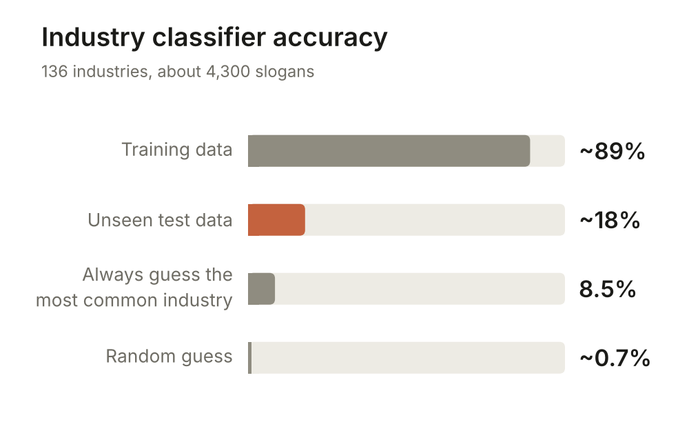
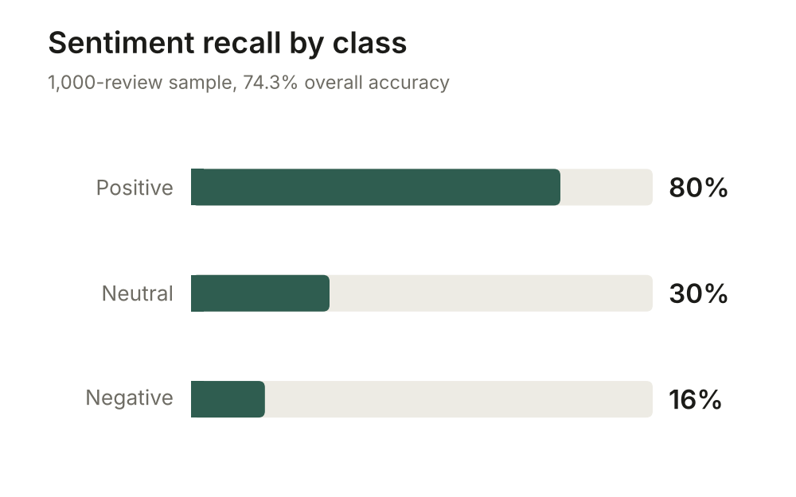
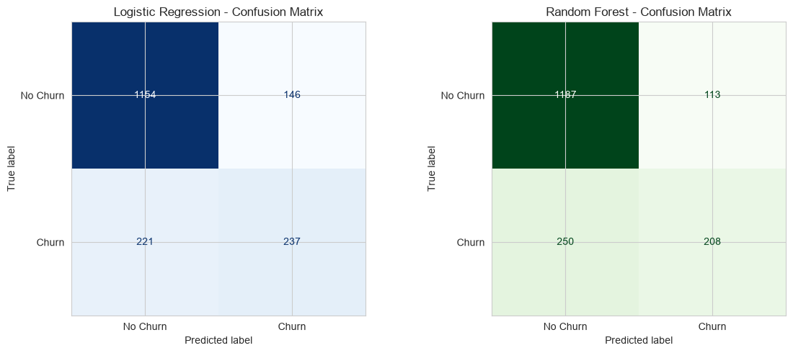
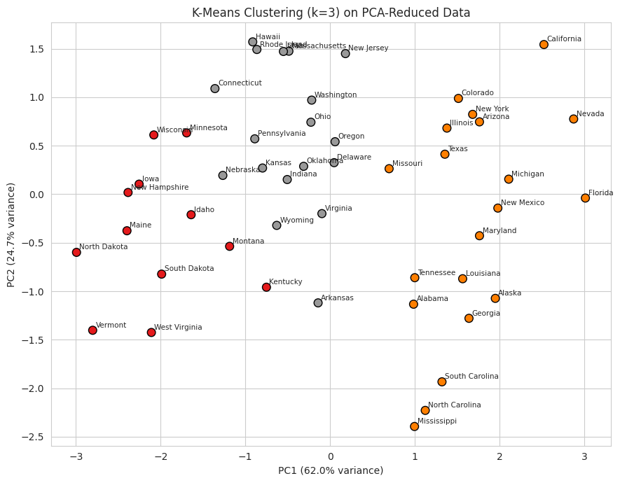
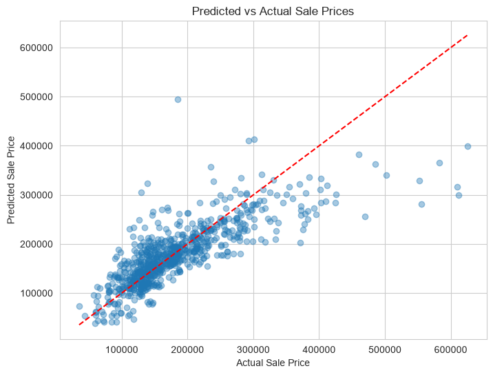
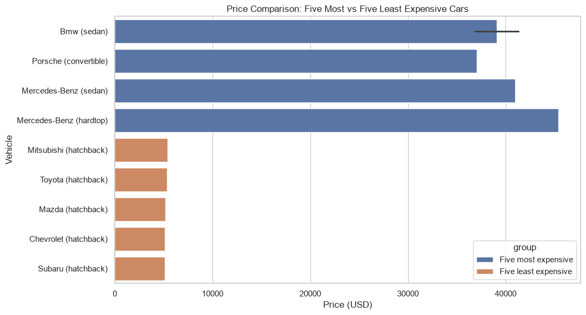

IT graduate based in Kempton Park, Gauteng. By day I trace faults through toll lane and vehicle classification systems at InstaToll Africa; outside of that I'm training and evaluating machine learning models in Python, working toward a career in AI and software development.
I got into IT because I enjoy solving real-world problems, and I enjoy finding a smarter way to solve them even more. At InstaToll Africa that means working through toll lane and vehicle classification issues, tracing errors back through the logs and database until I find the real cause, not just the symptom, so the same problem doesn't come back.
I wanted to build the systems as well as support them, so I completed the FNB App Academy full stack development certificate in 2025.In 2026 I finished the AI bootcamp at Stellenbosch University, in partnership with HyperionDev, covering data analytics, machine learning and neural networks. The nine projects on this page came out of that work.
A diploma in IT from Vaal University of Technology and a stack of Cisco networking certifications got me here.Where I'm headed next is somewhere between the intersection of software engineering and applied AI, building smarter models that solve real problems more efficiently. Pursuing the same thing that got me into IT: finding a smarter way to solve the problem.






This is the real project, running in your browser. Nothing is installed and nothing you type leaves this page.
Downloads Python into your browser the first time (about 10 MB).
Try 3 to view the stock, 4 to restock the lowest item, or 2 to add a shoe. Type something invalid to see how it recovers. Changes reset when you reload the page. Source and tests on GitHub →